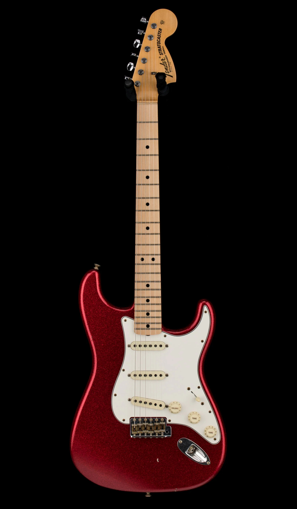
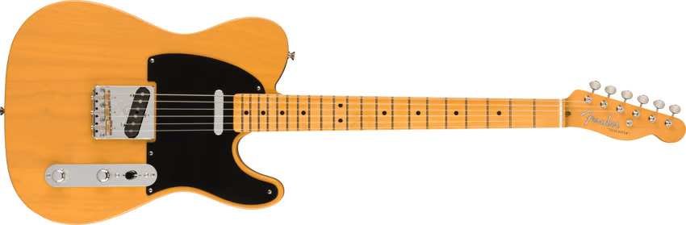
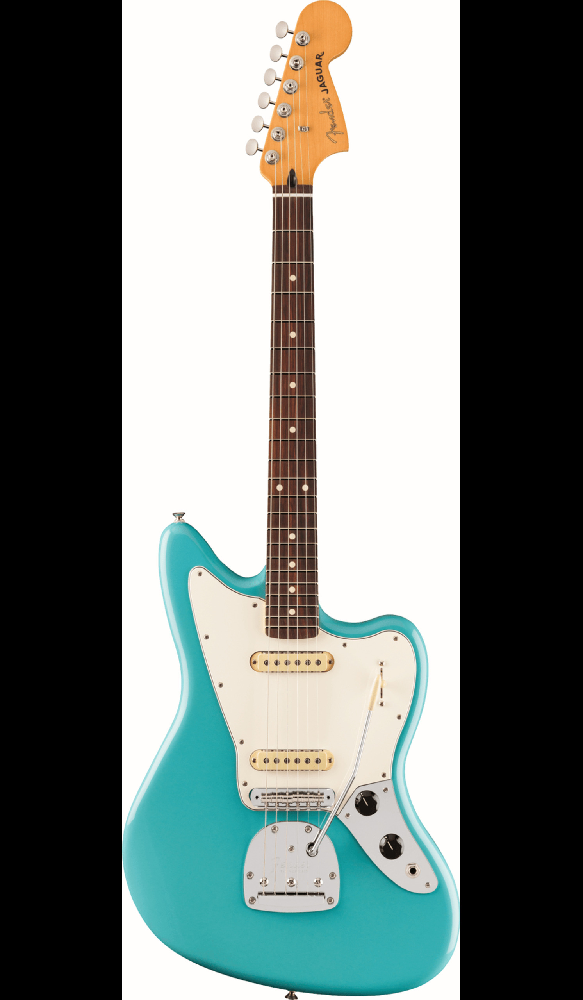
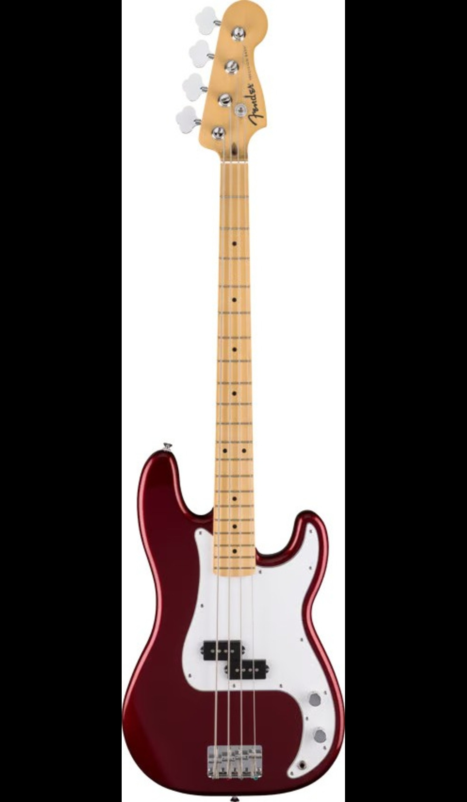
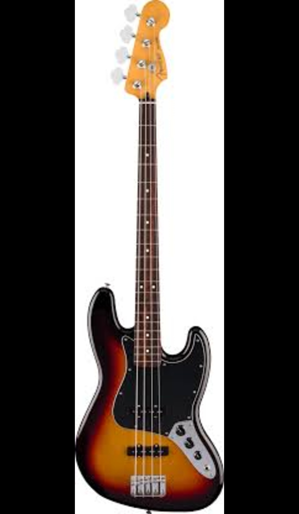

Electric Guitars
Stratocaster
Introduced in 1954, its contoured body and three-pickup design made it one of the most versatile guitars ever built.
Telecaster
The first solid-body electric guitar to achieve commercial success. Bright, twangy tone beloved by country and rock players.
Jaguar
Offset body and intricate switching; a favorite among surf and alternative musicians.
Bass Guitars
Precision Bass
The first electric bass guitar, revolutionizing rhythm sections and recording.
Jazz Bass
Slim neck and dual pickups for smooth, articulate tone.
